Inspirational architecture that feels like home.
James Kehl Architects designs timeless homes and living spaces, pursuing lightness, warmth and a refined character in every detail. The work spans the modern and the classic, from new houses to the careful renovation of existing ones. I also draw permit sets for additions, garages, pole barns and site plans for owners and builders anywhere in Ohio.
JKA is a solo practice. I work directly with homeowners and builders across Ohio, and I lead every project personally, from the first conversation through construction.
- Licensed
- Ohio & California
- Education
- Yale School of Architecture
- Experience
- 13 years, residential, commercial & institutional
- Practice
- Full service & construction documents
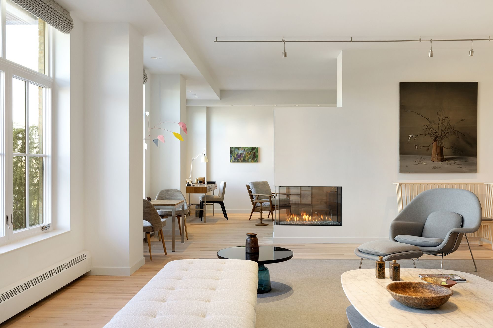
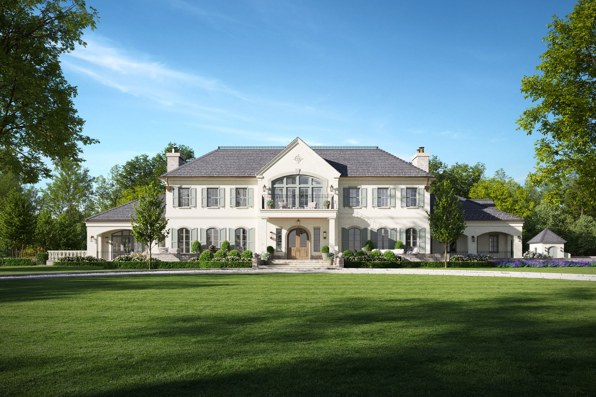
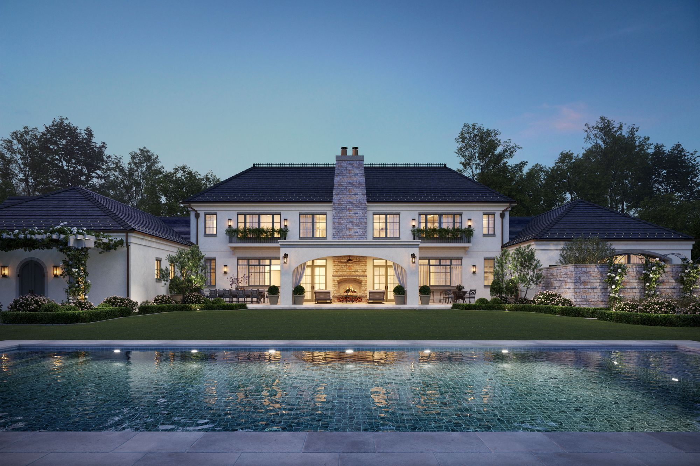
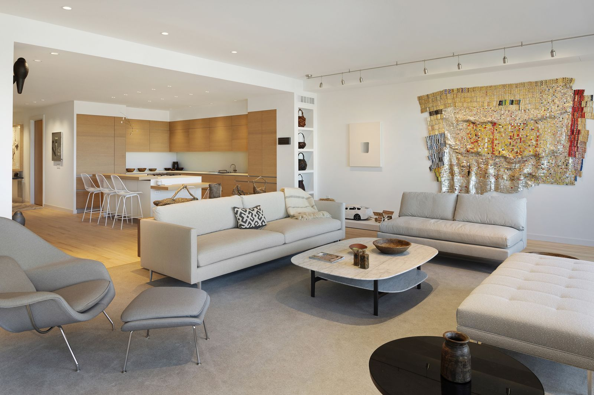
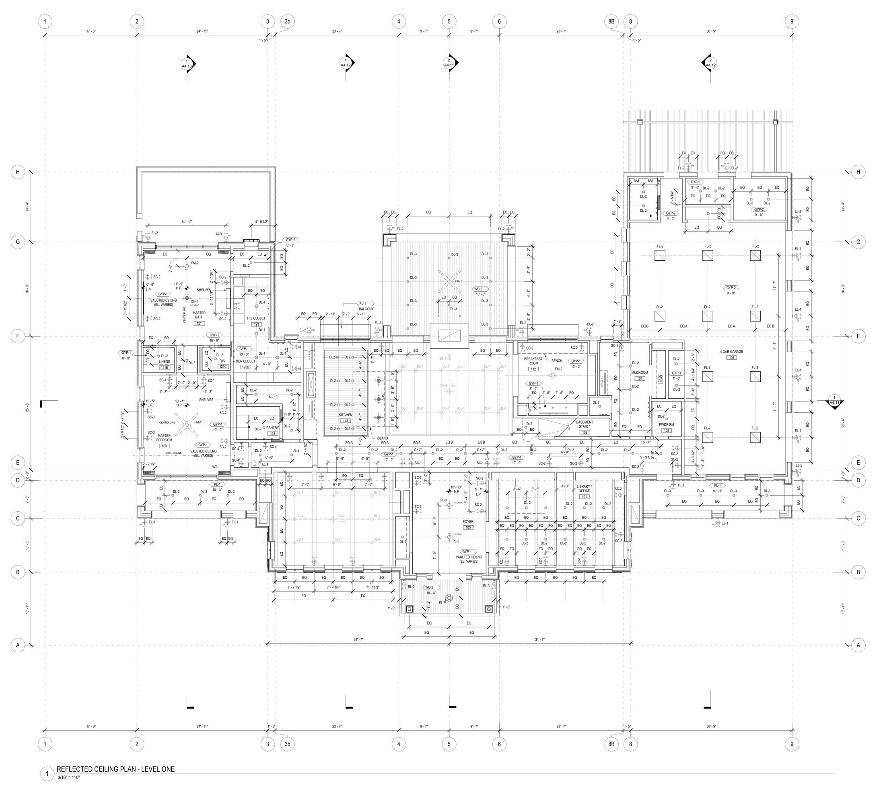
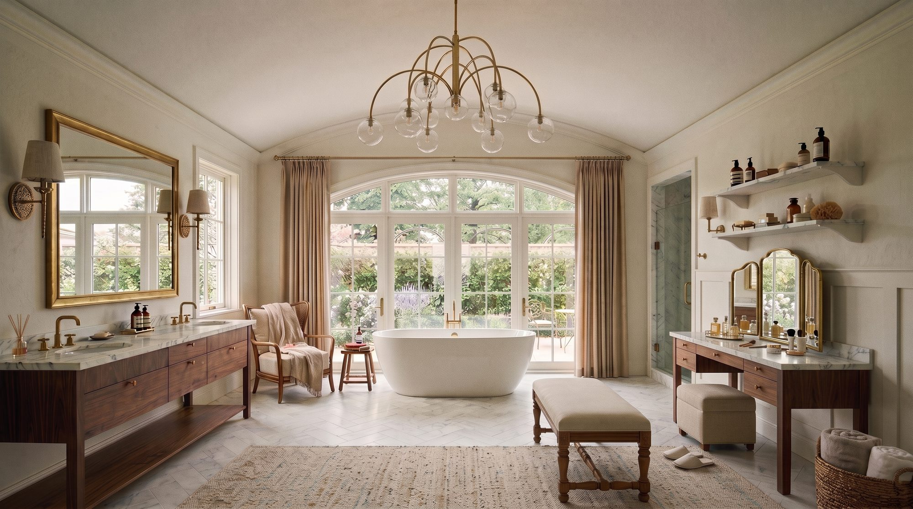
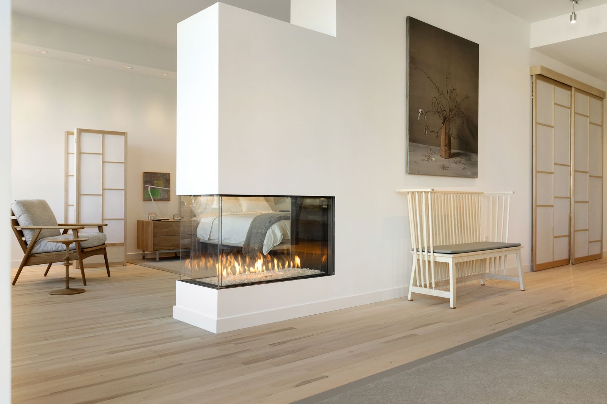
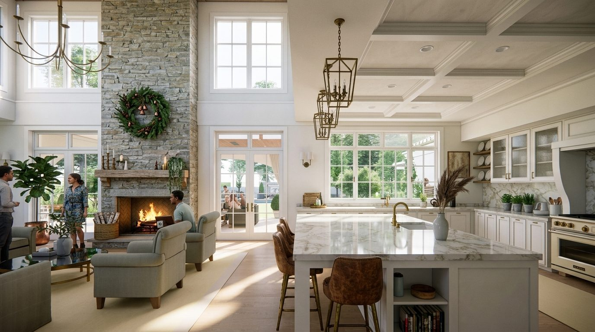
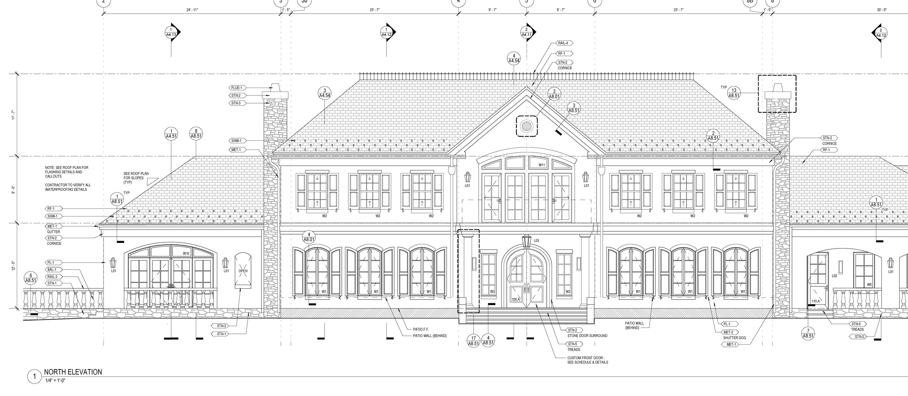
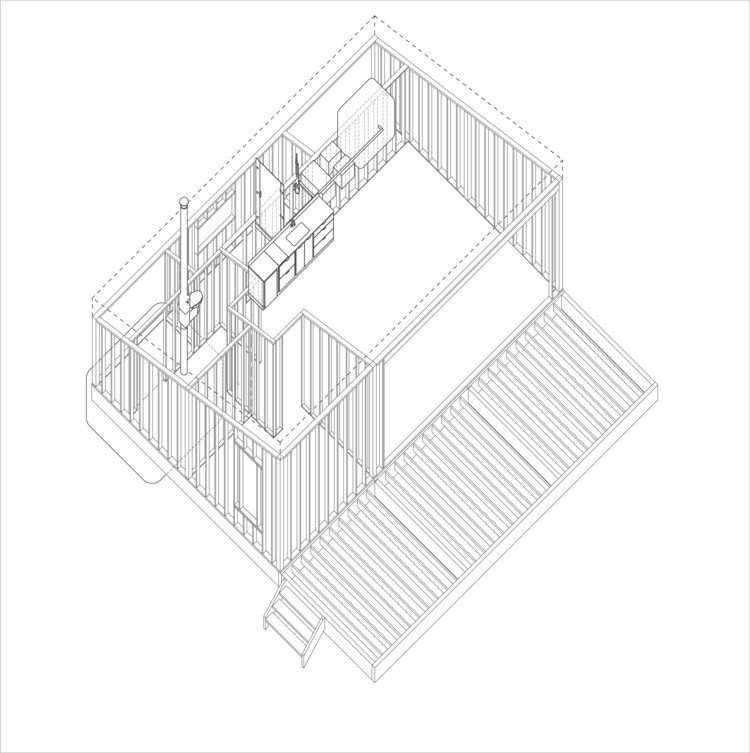
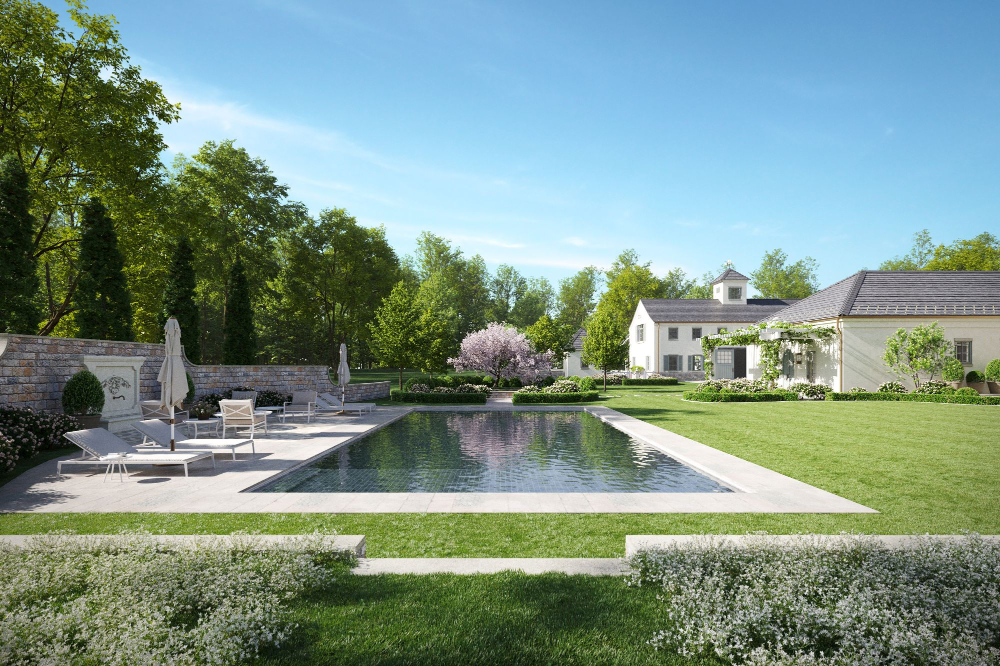
Houses, interiors and construction documents · built work and design proposals
Dedication to the craft and to my clients is at the heart of the practice. Every project begins by listening.
- How you liveYour needs, interests and way of life inform the ideas and the style of the architecture.
- House, interiors & landscapeEach residence is designed together with its interiors and landscape, to create rich environments that uplift and inspire.
- Budget & constraintsI embrace the requirements and constraints of a project and think rationally about how to maximize its value and potential.
- Codes & constructionI advise on planning and building codes, construction best practices and sustainable design, so decisions are made with full information.
By proposalafter an initial consultation
By proposalscope agreed in writing per project
- ConsultationObjectives, site, budget and schedule, with sketches and a proposal.
- Schematic designSite analysis, plans, elevations, materials and an early cost estimate.
- Design developmentRooms, windows, interiors and details refined, with renderings.
- Construction documentsA coordinated, stamped set, submitted for permit.
- Bidding & constructionBid review, site visits, contractor questions and shop drawings.
By proposal after an initial consultation
By proposal scope agreed in writing per project
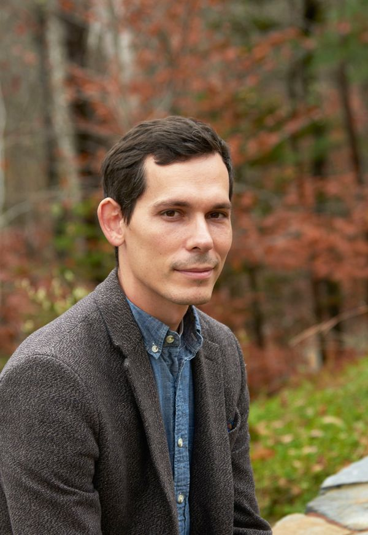
I established James Kehl Architects in 2023 after more than a decade at award-winning studios in New York, Los Angeles and Minneapolis, designing and managing residential, commercial, educational, cultural and institutional projects across the country.
- HGAAssociate, arts, community & education practice. AIA Minnesota Honor Award.
- Matt Peterson StudioProject manager, luxury custom residence
- Studio William HefnerProject architect, high-end residential
- Kohn Pedersen Fox · REXDesign
- Yale School of ArchitectureMaster of Architecture
- University of CincinnatiBachelor of Science in Architecture
“If I could give more stars I would! James is a rockstar architect and designer. He’s a great listener, communicator, and will get the job done. He goes above and beyond to make sure you are getting what you want and need. He is an incredible liaison with contractors and vendors; watches budget and costs carefully, and is VERY honest! Our home is beautiful… James made the process as seamless and wonderful as possible!”
Renovation & addition · California
“We have been working for over 2 years on a new home design with the principal of James Kehl Architects… it has been an absolute delight to partner together. The level of detail, skill, thoughtfulness, and oversight he brings to our project goes beyond what is required. He owns the project, and it is apparent with every detail.”
New residence · Ohio
“James designed a new addition that solved all our existing permit issues while creating a beautiful new room out of previously unusable space. His expert knowledge of building codes and creative problem-solving design skills were key to the success of our project. He saved us tens of thousands of dollars… James Kehl Architects saved the day!”
Addition · California